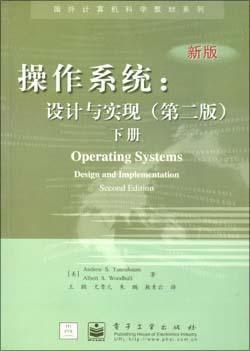
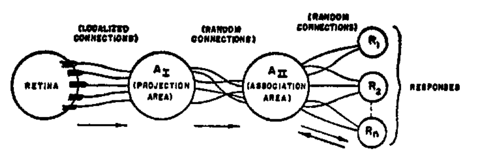
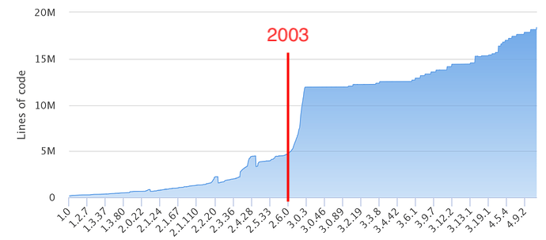
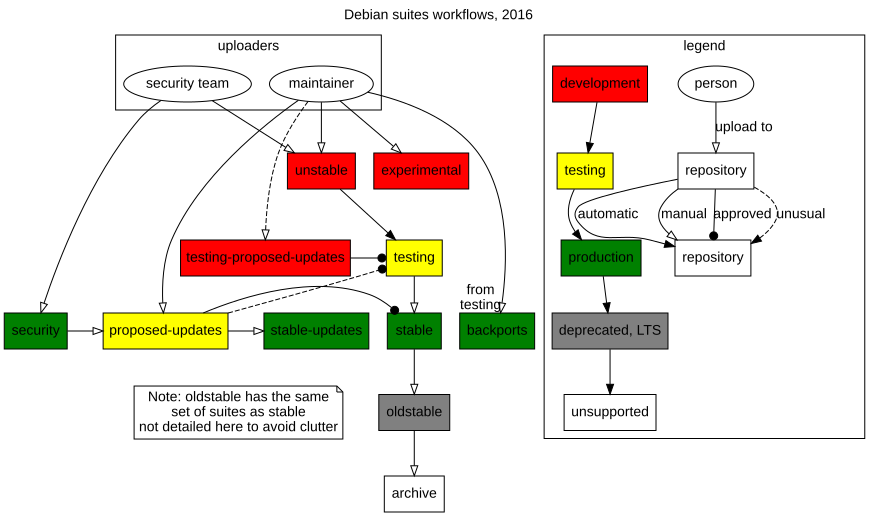

构建应用生态 (Hacking Day)
Review & Comments
链接和加载
- 本质讲的是 execve 的行为
- 继承文件描述符、singal hander 等
- 加载 ELF 文件 (数据结构) 和 INTERP 的所有 PT_LOAD, PT_GNU_STACK, PT_TLS …
- 设置进程的初始状态 (栈上的 argc, argv, envp, auxv、寄存器)
- 加上库函数的行为 (musl; ld-linux.so; …) 你就理解了操作系统的一切
- Shebang (#!)
- 惊喜：这么复杂的东西，其实也 “不过如此”
回到应用视角的操作系统
- 这个学期到现在一直在讲 “系统调用的行为”
- 课程的目标：阅读手册、指导 AI 写代码来理解任何系统调用，并且弄清楚为什么要这样设计
1. 见证历史
这些系统调用是怎么来的？
Dennis M. Ritchie: Evolution of the UNIX Time Sharing System
- 最早的版本甚至没有 fork()
- Shell 关闭所有打开的文件，然后为 0, 1 fd 打开终端文件
- 从终端读取命令行
- 打开文件，把加载器代码复制到内存并执行 (相当于 exec)
- exit 会重新加载 shell
- Takeaway message: 不要害怕 “不好”，大胆去做，并且持续改进
Andrew S. Tanenbaum: Minix
- Minix1 (1987): UNIXv7 兼容，也是 Linus 实现 Linux 的起点
- Minix2 (1997): POSIX 兼容，随书送代码
- Minix3 (2006): POSIX/NetBSD 兼容，全功能，一度是世界上应用最广的操作系统 (Intel ME)
我 “梦开始的地方”

Minix3

Minix
Minix 是 UNIX 之后的经典教学操作系统，Andrew Tanenbaum 也因此成就了一代计算机系统研究者。代码来自 Minix 1 and 2, Quick and Dirty editions。
Linux 的诞生 (1991 年 8 月 25 日)
Hello, everybody out there using minix – I’m doing a (free) operating system (just a hobby, won’t be big and professional like gnu) for 386(486) AT clones. This has been brewing since April, and is starting to get ready.
—— Linus Torvalds (时年 21 岁)
类似于 “我写了个加强版的 OSLab，现在与大家分享”
- 发布在 comp.os.minix（“百度贴吧”），依赖 Minix 的工具链；运行 GNU gcc, bash, …
- 机缘巧合：合适的人、合适的时间: Frank Rosenblatt 的 Perceptron paper

诞生了不少名场面
“The single worst company we’ve ever dealt with…” (2012)
- Alex Krizhevsky, Ilya Sutskever, Geoffrey Hinton 还在搞 AlexNet
- AlphaGo (2015), GPT-3 (2020), …
- 我还在读 PhD，抱怨 CUDA 编程模型很反人类
- 天道好轮回：能想象 NVDA 是现在市值最高的公司？
“Just for fun”
The story of an accidental revolutionary
Revolutionaries aren’t born. Revolutions can’t be planned. Revolutions can’t be managed. Revolutions happen....
—— David Diamond (本书作者)
全国高校科技创新工作会议暨基础学科和交叉学科突破计划启动部署会召开 (2025.12)
- ……要提高政治站位，勇担国家使命，精心谋划一批重大战略任务、重大政策举措和重大工程项目，聚焦战略领域、关键要素，构建有效评价指标，努力形成一批标志性成果，加快把高校的资源优势转化为竞争优势……
- 我的博导也是干摩托车发动机的，他为什么没干出来：因为我在 “人-机-物融合时代实现操作系统的弯道 (换道) 超车” 🤔
质疑、回应与时代的车轮
在 comp.os.minix 上关于 Linux 的讨论越来越多了
- Andrew Tanenbaum 做出了 “官方回应”，觉得 “太落后”
- Linus 完全不服气：全文
- 已经得了图灵奖的 Ken Thompson 还在回百度贴吧
时代成就的英雄
- Linux 2.0 引入多处理器 (Big Kernel Lock, 内核不能并行)，2.4 内核才并行
- 2002 年才引入 Read-Copy-Update (RCU) 无锁同步
- 2003 年 Linux 2.6 发布，随云计算开始起飞

同样的故事还在反复发生
一切伟大都 “从零开始”
- Fire in the Valley (个人电脑)
- Evolution of the UNIX Time Sharing System
AI 时代，从 0 到 0.1 变得前所未有地容易
- CrazyOS: 可以和 hardware 做 co-design
- Claude Mythous: finding bugs is easy
- caveman: why use many token when few do trick
2. 创造世界
回顾：关于 “初始状态”
进程的初始状态
- execve(path, argv, envp)
- SP 指向 [argc, argv, 0, envp, 0, auxv]
- path 和 interp 被加载到内存，PC 是 interp 的 ELF entry
计算机系统的初始状态
- CPU Reset (手册指定的行为)
- 运行 Firmware 代码加载操作系统
- 终究，操作系统会执行一个 execve，启动第一个进程，变成 “服务提供者”
操作系统的第一个进程？
- 这个 “长出” 了你看到操作系统世界全部的进程，它到底在哪里，它做了什么？
initramfs
问出一个问题：我们能控制 Linux 加载的第一个进程吗？
- 计算机系统公理：合理的事情就一定能做到
- 制作我们的 initramfs
- 可以只有一个 init 文件
- Linux 会按照一个硬编码的 /sbin/init, /etc/init, … 逐个尝试 execve
- (系统启动后，Linux 还会增加 /dev 和 /dev/console)
- 需要给 stdin/stdout/stderr 一个 “地方”
- 可以只有一个 init 文件
再问题一个问题：我们能解开当前系统的 initramfs 吗？
- 当然可以！看看里面有什么吧！
最小 Linux
我们完全可以构建一个 “只有一个文件” 的 Linux 系统——Linux 系统会首先加载一个 “init RAM Disk” 或 “init RAM FS”，在作系统最小初始化完成后，将控制权移交给 “第一个进程”。借助互联网或人工智能，你能够找到正确的文档，例如 The kernel’s command-line parameters 描述了所有能传递给 Linux Kernel 的命令行选项。
Linux
我们可以在 initramfs 中放置任意的数据——包括应用程序、内核模块 (驱动)、数据、脚本……操作系统世界已经开始运转；但直到执行 pivot_root，才真正开始 今天 Linux 应用世界 (systemd) 的启动。
点亮 Linux 世界
Busybox utilities
[ [[ acpid adjtimex ar arch arp arping ash awk basename bc blkdiscard blockdev brctl bunzip2 busybox bzcat bzip2 cal cat chgrp chmod chown chpasswd chroot chvt clear cmp cp cpio crond crontab cttyhack cut date dc dd deallocvt depmod devmem df diff dirname dmesg dnsdomainname dos2unix dpkg dpkg-deb du dumpkmap dumpleases echo ed egrep env expand expr factor fallocate false fatattr fdisk fgrep find fold free freeramdisk fsfreeze fstrim ftpget ftpput getopt getty grep groups gunzip gzip halt head hexdump hostid hostname httpd hwclock i2cdetect i2cdump i2cget i2cset id ifconfig ifdown ifup init insmod ionice ip ipcalc ipneigh kill killall klogd last less link linux32 linux64 linuxrc ln loadfont loadkmap logger login logname logread losetup ls lsmod lsscsi lzcat lzma lzop md5sum mdev microcom mkdir mkdosfs mke2fs mkfifo mknod mkpasswd mkswap mktemp modinfo modprobe more mount mt mv nameif nc netstat nl nologin nproc nsenter nslookup nuke od openvt partprobe passwd paste patch pidof ping ping6 pivot_root poweroff printf ps pwd rdate readlink realpath reboot renice reset resume rev rm rmdir rmmod route rpm rpm2cpio run-init run-parts sed seq setkeycodes setpriv setsid sh sha1sum sha256sum sha512sum shred shuf sleep sort ssl_client start-stop-daemon stat static-sh strings stty su sulogin svc svok swapoff swapon switch_root sync sysctl syslogd tac tail tar taskset tc tee telnet telnetd test tftp time timeout top touch tr traceroute traceroute6 true truncate tty tunctl ubirename udhcpc udhcpd uevent umount uname uncompress unexpand uniq unix2dos unlink unlzma unshare unxz unzip uptime usleep uudecode uuencode vconfig vi w watch watchdog wc wget which who whoami xargs xxd xz xzcat yes zcat
initramfs: 并不是我们 “看到” 的 Linux 世界
启动的初级阶段
- 加载剩余必要的驱动程序，例如磁盘/网卡
- 挂载必要的文件系统
- Linux 内核有启动选项 (类似环境变量)
- /proc/cmdline (man 7 bootparam)
- 读取 root filesystem 的 /etc/fstab
- Linux 内核有启动选项 (类似环境变量)
- 将根文件系统和控制权移交给另一个程序，例如 systemd
启动的第二级阶段
- 看一看系统里的 /sbin/init 是什么？
- 计算机系统没有魔法 (一切都有合适的解释)
构建 “真正” 应用世界的系统调用
switch_root 命令背后的系统调用
int pivot_root(const char *new_root, const char *put_old);
- Changes the root mount in the mount namespace of the calling process.
- 我们也可以在 “最小 Linux 上” 复现这个行为
- 真实的 Linux: 驱动加载、NetworkManager、tty 字体变化……都是在 switch_root 之后 systemd 拉起的
- 可以 umount 把 put_old 释放
故事的结尾：应用视角的操作系统
操作系统会到达一个确定的初始状态
- initramfs + /dev/console + execve(init)
操作系统 = 对象 + API
- 所有的其他对象 (procfs, devfs, …) 都是系统调用创建和管理的
- 进程管理: fork, execve, exit, waitpid, getpid, …
- 操作系统对象和访问: open, close, read, write, pipe, mount, mkfifo, mknod, stat, socket, …
- 地址空间管理: mmap, munmap, mprotect, msync, …
- 以及一些其他的机制: pivot_root, chmod, chown, …
Unix → Minix → Linux，到达成熟稳定的状态
- 精彩的故事在这个 API 抽象层上延续
- 在 Linux API 上，没有什么东西是不能做的
3. 应用生态
拥抱变化的时代
是应用生态成就了操作系统的繁荣
- 厂商、个人开发者、……每天都在发布新的应用
- 操作系统需要有一套核心工具集来支撑它们
- 基本的运行库、coreutils、安装工具、系统管理工具、……
前互联网时代
- DOS/Windows 3.X/95: 软盘/光盘发行
- 双击安装程序，输入 CD-Key (“破解” 简直太容易了)
- 进入互联网时代：AppStore, apt, rpm, PyPI, npm, HuggingFace 🤗, ollama…
例子：Debian
Our Mission: Creating a Free Operating System
The Debian Project is an association of individuals, sharing a common goal: We want to create a free operating system, freely available for everyone. Now, when we use the word “free”, we’re not talking about money, instead, we are referring to software freedom.
- CS 和其他任何学科都不同：开源开放
- apt-get install firefox (1998)
- 跨时代的 “Advanced Packaging Tool”
Debian 的包管理 (“软件供应链”)

Debian 软件包 (deb)
一个压缩包 (例子)
- control.tar.xz
- “control” 文件: Package, Source, Version, Architecture, Maintainer, Depends, Suggests, Section, Priority, Description, …
- data.tar.xz
- 实际的文件 (绝对路径)
- dpkg 可以安装 deb 包
- 它也是操作系统上的一个普通应用程序 (使用系统调用完成 “安装” 功能)
让 AI 帮我们读一读吧
- Preinstall & Unpack → Configure → Triggers → Postinstall
- 最近 axios (每周下载量超 3 亿次) 被投毒了：postinstall hook 能偷走你的一切
AI 时代：应用生态的变化
建设应用生态之路
- 生态的关键是开发者
- 但 qualify 的开发者太少了
- 大学四年都在写高血压代码？
-
错误的设计 = 无法维护的泥潭
- 课程的使命是让大家 “见识” 各种设计
应用生态：繁荣还是消亡？
- OpenClaw 🦞 时代，“应用程序” 会退化为 “工具” 和 “服务” 吗？
- GUI 会不复存在吗？A2UI: A Protocol for Agent-Driven Interfaces; 豆包手机; Qwen 应用
Takeaways
从 UNIX 发展到 Linux，操作系统经历了漫长的演进。Linux 的 “两面” 是内核和发行版生态，而 initramfs 提供了进程运行的初始状态。应用程序通过系统调用与内核交互，现代操作系统的应用生态依赖于包管理工具和开发者社区。